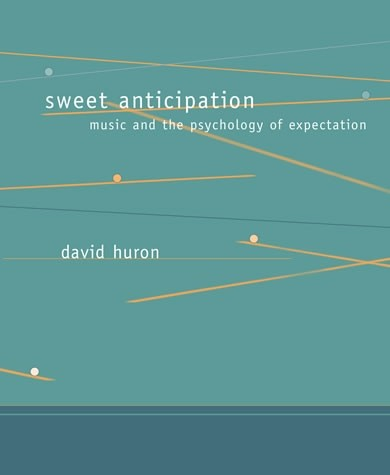
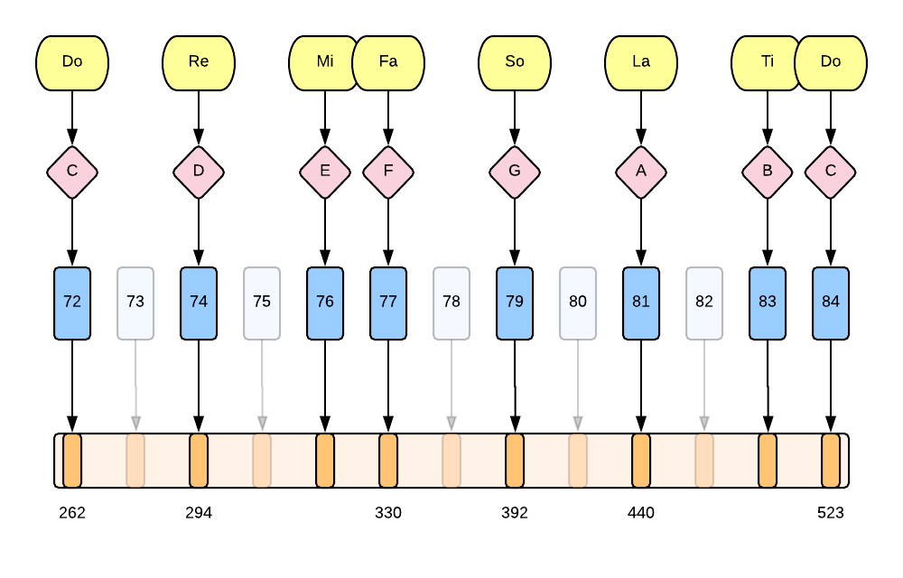
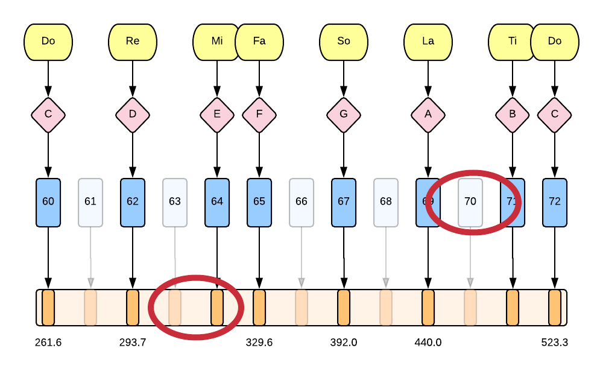
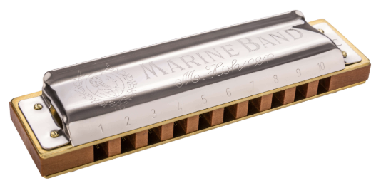

<!doctype html>
<html>
	<head>
		<meta charset="utf-8">
		<meta name="viewport" content="width=device-width, initial-scale=1.0, maximum-scale=1.0, user-scalable=no">

		<title>It Ain't Necessarily So</title>

		<link rel="stylesheet" href="css/reveal.css">
		<link rel="stylesheet" href="css/theme/solarized.css">

		<!-- Theme used for syntax highlighting of code -->
		<link rel="stylesheet" href="lib/css/zenburn.css">

		<!-- Printing and PDF exports -->
		<script>
			var link = document.createElement( 'link' );
			link.rel = 'stylesheet';
			link.type = 'text/css';
			link.href = window.location.search.match( /print-pdf/gi ) ? 'css/print/pdf.css' : 'css/print/paper.css';
			document.getElementsByTagName( 'head' )[0].appendChild( link );
		</script>
	</head>
	<body>
		<div class="reveal">
			<div class="slides">
                <section data-markdown>
                    <script type="text/template">
                        # It Ain't Necessarily So

                        

                        [@ctford](https://twitter.com/ctford)/[ThoughtWorks](https://thoughtworks.com)

                        [App](https://ctford.github.io/it-aint-necessarily-so/)
                    </script>
                </section>

                <section data-markdown>
                    <script type="text/template">
                        ## Music-as-code FAQs

                        1. Can I try it myself?
                        2. Can this be used to generate music?
                        3. Can you use types to enforce these rules?
                    </script>
                </section>

               <section data-markdown>
                    <script type="text/template">
                        ## Sweet Anticipation

                        

                        by David Huron
                    </script>
                </section>

                <section data-markdown>
                    <script type="text/template">
                        1. Music is appreciated through statistical learning.
                        2. Prediction delights your "thinking fast" brain.
                        3. Novelty keeps your "thinking slow" brain interested.
                    </script>
                </section>

                <section data-markdown>
                    <script type="text/template">
                        ## Descriptivism vs Prescriptivism

                        Descriptive: jumping by a major seventh is rare.

                        Prescriptive: jumping by a major seventh is wrong.
                    </script>
                </section>

                <section data-markdown>
                    <script type="text/template">
                        ## Solfège

                        [App](https://ctford.github.io/it-aint-necessarily-so/)
                    </script>
                </section>

                <section data-markdown>
                    <script type="text/template">
                        ## Statistical learning
                        

                        Likelihood that a pitch on the y axis is followed by a pitch on the x axis
                        in a sample of 50,000 notes of German folk music.
                    </script>
                </section>

                <section data-markdown>
                    <script type="text/template">
                        ## Expectation fulfillment
                        

                        Likelihood that a metric position on the y axis is followed by a metric position
                        on the x axis in a sample of 50,000 notes of German folk music.
                    </script>
                </section>

                <section data-markdown>
                    <script type="text/template">
                        ## Implications

                        * You can only listen to a song for the first time once.
                        * Bach would not have liked 'Smells Like Teen Spirit'.
                        * Appropriation of musical styles is complicated.
                    </script>
                </section>

                <section data-markdown>
                    <script type="text/template">
                        [Demo time!](https://ctford.github.io/it-aint-necessarily-so/)
                    </script>
                </section>

                <section data-markdown>
                    <script type="text/template">
                        ## A tower of interpreters
                        
                    </script>
                </section>

                <section data-markdown>
                    <script type="text/template">
                        ## Skipping floors of the tower of interpreters
                        
                    </script>
                </section>

                <section data-markdown>
                    <script type="text/template">
                        ## Solution 1: Piano
                        [](https://commons.wikimedia.org/wiki/File:Klavier_nah_offen.jpg)

                        Anything between the keys is impossible.
                    </script>
                </section>

                <section data-markdown>
                    <script type="text/template">
                        ## Solution 2: Violin
                        [](https://commons.wikimedia.org/wiki/File:Violin_VL100.png)

                        Anything goes.
                    </script>
                </section>

                <section data-markdown>
                    <script type="text/template">
                        ## Solution 3: Guitar
                        [](https://commons.wikimedia.org/wiki/File:GuitareClassique5.png)

                        There is a guide, but you can bend notes.
                    </script>
                </section>

                <section data-markdown>
                    <script type="text/template">
                        ## Mezzo

                        * [Haskell composition library](https://github.com/DimaSamoz/mezzo) by Dima Samoz.
                        * Takes the concepts developed in Paul Hudak's 'Haskell School of Expression' and applies dependent types.
                        * Enforces rules of music composition at compile-time.
                        * "A very strict spell-checker for music".
                    </script>
                </section>

                <section data-markdown>
                    <script type="text/template">
                        ## Mezzo

                        This compiles:
                        ```haskell
                          comp = defScore $ start $ melody :| c :| d :| e :| f :>> g
                        ```

                        <br/>

                        This doesn't, as leaps from c to b aren't "allowed":

                        ```haskell
                          comp = defScore $ start $ melody :| c :| b :| e :| f :>> g
                        ```
                    </script>
                </section>

                <section data-markdown>
                    <script type="text/template">
                        ## Well-typed music does not sound wrong...?

                        Dima encoded Chopin's Prelude into Mezzo:

                        > The piece could be transcribed in almost its entirety - however, I occasionally had to leave out a few notes as they would create forbidden intervals which Mezzo pointed out.

                        [Dima's dissertation](https://github.com/DimaSamoz/mezzo/blob/master/docs/dissertation.pdf).

                    </script>
                </section>

                <section data-markdown>
                    <script type="text/template">
                        > This demonstrates that the library works, as well as the fact that it is perfectly common for composers to break the rules for artistic effect.
                    </script>
                </section>

                <section data-markdown>
                    <script type="text/template">
                        ## Finite State Music

                        ```haskell
                        data Solfege = Do | Re | Mi | Fa | So | La | Ti
                        entropy : Solfege -> Solfege -> Nat
                        -- ...

                        data Melody : (Solfege, Solfege) -> (Nat, Nat) -> Type where
                          Pure   : x -> Melody (x, x) (0, 0)

                          (>>=)  : Melody (w, x) (lower, upper) ->
                                   (() -> Melody (y, z) (lower', upper')) ->
                                   Melody (w, z) (entropy x y + lower + lower', entropy x y + upper + upper')

                          Relax  : Melody (x, y) (lower + dl, upper) -> Melody entropy (x, y) (lower, upper + du)
                        ```
                    </script>
                </section>

                <section data-markdown>
                    <script type="text/template">
                        ## Finite State Music

                        ```haskell
                        conventional : Melody (Do, So) (8, 16)
                        conventional = Relax $ do
                          Pure Do
                          Pure Re
                          Pure Mi
                          Pure Fa
                          Pure So

                        unconventional : Melody (Do, So) (12, 24)
                        unconventional = Relax $ do
                          Pure Do
                          Pure Ti
                          Pure Mi
                          Pure Fa
                          Pure So

                        song : Melody (Do, So) (20, 50)
                        song = Relax $ do
                          conventional
                          unconventional
                        ```
                    </script>
                </section>

                <section data-markdown>
                    <script type="text/template">
                        ## Conclusion

                        * Careful, or innovative states might be unrepresentable...
                        * ...or unusual states might be unremarkable.
                        * Dependent types might help...
                        * ...but we would have to work at it.
                        * Huron's 'Sweet Anticipation' is really cool.
                    </script>
                </section>

                <section data-markdown>
                    <script type="text/template">
                        ## Coda: Crossharping
                        

                        > Perhaps the most striking example in all music of a thoroughly idiomatic
                        > technique that flatly contradicts everything that the instrument was designed for.

                        Peter van der Merwe in _Origins of the Popular Style_
                    </script>
                </section>

                <section data-markdown>
                    <script type="text/template">
                    ## References
                    * [The Haskell School of Expression](http://www.cs.yale.edu/homes/hudak/SOE/) by Paul Hudak.
                    * [Marine Band Harmonica](https://www.hohner.de/en/instruments/harmonicas/diatonic/marine-band/marine-band-1896) by Hohner.
                    * [Idris](https://www.idris-lang.org/) by Edwin Brady.
                    * [Leipzig](https://github.com/ctford/leipzig) by Chris Ford.
                    * [Mezzo](https://github.com/DimaSamoz/mezzo) by Dima Samoz.
                    * [Origins of the Popular Style](https://global.oup.com/academic/product/origins-of-the-popular-style-9780198163053?cc=es&lang=en&) by Peter van der Merwe.
                    * [Overtone](http://overtone.github.io/) by Sam Aaron and Jeff Rose.
                    * [Sweet Anticipation](https://musiccog.ohio-state.edu/SweetAnticipation) by David Huron.
                    </script>
                </section>

			</div>
		</div>

		<script src="lib/js/head.min.js"></script>
		<script src="js/reveal.js"></script>

		<script>
			// More info https://github.com/hakimel/reveal.js#configuration
			Reveal.initialize({
				history: true,

				// More info https://github.com/hakimel/reveal.js#dependencies
				dependencies: [
					{ src: 'plugin/markdown/marked.js' },
					{ src: 'plugin/markdown/markdown.js' },
					{ src: 'plugin/notes/notes.js', async: true },
					{ src: 'plugin/highlight/highlight.js', async: true, callback: function() { hljs.initHighlightingOnLoad(); } }
				]
			});
		</script>
	</body>
</html>

